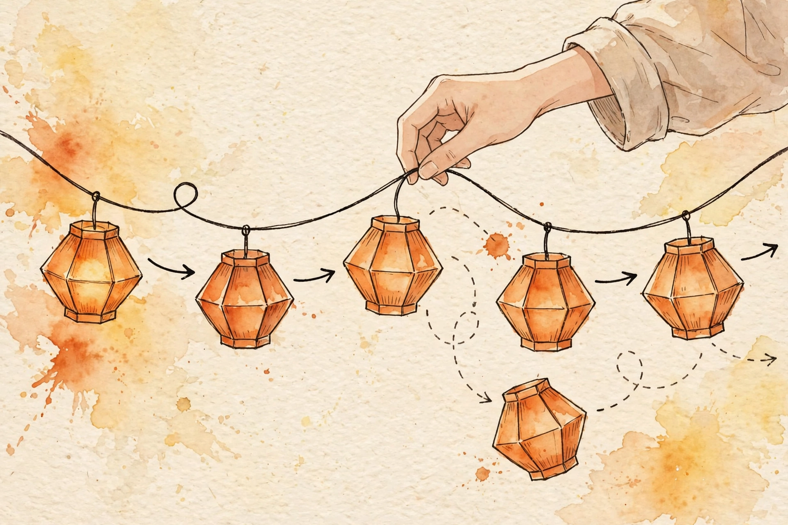

Arrays were a parking row — cheap to find, expensive to rearrange. A linked list is a train: nodes scattered through memory, joined by pointers, with the head pointer as your only way in. This guide flips L1's contiguity bargain, derives the flipped cost table, and drills the three interview mechanics: in-place reversal, the dummy-node trick, and merge-two-sorted.

L1's contiguity bargain: an array keeps everything in one block, so indexing is
address arithmetic (base + i × w) → Θ(1), and changing the middle
shifts everything after it → Θ(n). A linked list inverts both
halves of that bargain. Nodes live wherever memory had room, so no formula can
relate positions — reaching node k is k pointer hops, Θ(n). But splicing at a node
you already hold is two pointer writes, Θ(1), with nothing to shift. Everything
below is a consequence of this inversion.
One-line version: a linked list trades the array's address
arithmetic for pointer surgery — you lose Θ(1) indexing and gain Θ(1) splicing at
a node you hold. The dummy node is the surgical assistant: it parks an empty car
in front of the train so the head never needs a special case, and the answer is
always dummy.next.
Derivation 1 — indexing. Array: address = base + k × w,
one multiplication and one memory access → Θ(1). Linked list: each hop
dereferences a pointer to discover the next address — inherently
sequential, unskippable, because nothing tells you where node k+1 lives until you
read node k. Reaching node k costs k hops → Θ(n) worst case. No contiguity, no
arithmetic.
Derivation 2 — splice at a known node. Deleting node X from the
train: its predecessor P does P.next = X.next — two pointer writes,
Θ(1); the rest of the train never moves. The array equivalent shifts n−k−1
elements — Θ(n) data movement. The linked list pays Θ(1) exactly where the array
paid Θ(n); it bought that with Θ(n) indexing.
Derivation 3 — in-place reversal. Iterative: three pointers
(prev, curr, nxt), each step visits one
node and does constant work → Θ(n) time, three pointers → O(1) extra space.
Recursive: identical visits, but every call holds a stack frame until the
recursion unwinds → Θ(n) extra space, and Python's default recursion limit (1000)
crashes on longer lists. Same big-O time, different memory story — and the
memory story is the interview question.
Problem 1 — Reverse Linked List (LC 206). The three lines must run in exactly this order — the comments say why:
class ListNode:
def __init__(self, val=0, next=None):
self.val = val
self.next = next
def reverse_list(head):
# prev trails curr; nxt stashes the future. Each node visited
# once -> Theta(n) time; three pointers -> O(1) extra space.
# The invariant after each step: prev heads the reversed
# prefix, curr heads the unreversed suffix.
prev, curr = None, head
while curr:
nxt = curr.next # 1. stash the coupling ahead — FIRST
curr.next = prev # 2. rewire: this car now points backward
prev = curr # 3. walk both pointers forward
curr = nxt
return prev # the last car is the new engine
Problem 2 — Merge Two Sorted Lists (LC 21). The dummy node absorbs
every head special case; tail always points at the last car of the
merged train. This is mergesort's merge step (L9) wearing a linked-list costume:
def merge_two_lists(l1, l2):
# Theta(n+m) time: each car chosen once. O(1) extra space.
# tail.next = l1 or l2 splices the whole survivor — the
# remainder is already linked; walking it wastes work.
dummy = tail = ListNode() # empty engine; answer is dummy.next
while l1 and l2:
if l1.val <= l2.val:
tail.next, l1 = l1, l1.next
else:
tail.next, l2 = l2, l2.next
tail = tail.next
tail.next = l1 or l2
return dummy.next
curr.next = prev before nxt = curr.next orphans the tail — the #1 linked-list bug, and it corrupts silently: no IndexError to save you. The ordering in Figure 3 is a law, not a suggestion.head = head.next inside a helper changes nothing for the caller unless you return the new head. Return dummy.next — that's the dummy's job.curr, not curr.next. while curr.next skips the last car. Always check the pointer you are about to dereference — the invariant is about curr.l1 or l2 splices the whole survivor. The remainder is already linked — walking it node by node is wasted work and signals you don't trust the structure.dummy.next; never include dummy.val. Forgetting this returns an extra phantom car.L15 (Fast & slow pointers) — Floyd's cycle detection runs on the trains you can now build. L23 (LRU cache) — a doubly-linked list plus a hash map; today's Θ(1) splice is the entire reason that design works. L30 (Merge k sorted lists) — today's merge, generalized with a heap from L28. L8 (Recursion) — reread reversal recursively once, to feel the Θ(n) stack. L5 (Hash maps) — paired with lists in LRU: O(1) lookup plus O(1) splice is the combo.
Cover the answers. Say each one aloud until it's clean.
There's no contiguity, so no address arithmetic — the address of node k+1 is only discoverable by dereferencing node k's pointer. You must walk k couplings sequentially: k hops → Θ(n) worst case.
List: P.next = X plus X.next = P.next_old — two pointer writes, Θ(1); the rest of the train doesn't move. Array: insert at k shifts n−k−1 elements one slot right — Θ(n) data movement. (Finding the position costs Θ(n) for both; the splice itself is what differs.)
curr.next = prev overwrites the only reference to the unreversed suffix. The nodes after curr become unreachable — garbage-collected and gone, silently. You must hold nxt = curr.next first.
It kills the head special case: park an empty engine in front, do all surgery relative to it, return dummy.next. Contract: the answer is always dummy.next, whatever happened at the front.
Both visit each node once (Θ(n) time). The iterative version holds three pointers. The recursive version keeps one stack frame per call alive until the recursion bottoms out and unwinds — n frames → Θ(n) extra space, plus Python's 1000-frame limit.
When random access dominates, or when cache locality matters: arrays store data contiguously (cache-friendly); linked lists chase pointers across the heap (cache-hostile). Insertion is Θ(n) for the array but each "shift" is a fast memmove — big-O isn't the whole story.
nxt = curr.next moved after the rewire — curr.next = prev; nxt = curr.next; prev, curr = curr, nxt. What happens?The stash captures the wrong future: after the sever, curr.next is prev, so nxt = prev, then curr = nxt = prev = curr — curr stalls forever and the rest of the train is already gone. This is gotcha #1 in code form: the stash must happen before the sever, or you memorize the past instead of the future.
A doubly-linked list holds entries in recency order; a hash map holds key → node. Touch: hash-map lookup (O(1)), then splice the node to the front (Θ(1) pointer rewiring — today's move). Evict: drop the tail. Both halves of the inversion show up in one design.
"A linked list is a train: nodes scattered in memory, each holding data and one pointer to the next, with the head pointer as the only way in. Indexing is Θ(n) because there's no address arithmetic — you walk k couplings to reach the k-th car. But splicing at a node you hold is Θ(1): two pointer writes with nothing to shift, where an array pays Θ(n) shifting the tail. The interview mechanics are three moves: in-place reversal with prev, curr, nxt — always stash next before you rewire — Θ(n) time, O(1) space; the dummy-node trick so the head never needs a special case; and merge-two-sorted with a tail pointer, which is mergesort's merge step. Choose the train when the workload is mostly splicing, not random access."